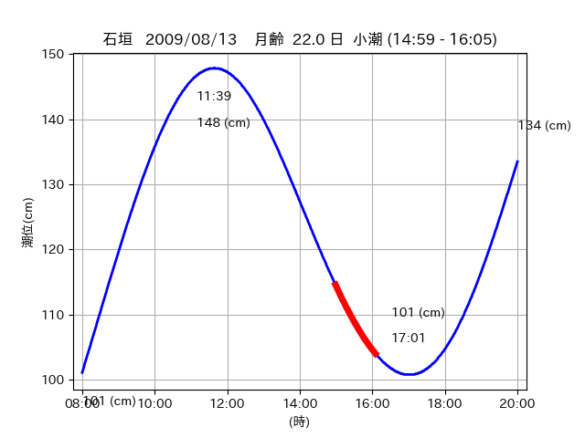

<!DOCTYPE html>
<html>
<head>
    
    <meta http-equiv="content-type" content="text/html; charset=UTF-8" />
    
        <script>
            L_NO_TOUCH = false;
            L_DISABLE_3D = false;
        </script>
    
    <style>html, body {width: 100%;height: 100%;margin: 0;padding: 0;}</style>
    <style>#map {position:absolute;top:0;bottom:0;right:0;left:0;}</style>
    <script src="https://cdn.jsdelivr.net/npm/leaflet@1.9.3/dist/leaflet.js"></script>
    <script src="https://code.jquery.com/jquery-3.7.1.min.js"></script>
    <script src="https://cdn.jsdelivr.net/npm/bootstrap@5.2.2/dist/js/bootstrap.bundle.min.js"></script>
    <script src="https://cdnjs.cloudflare.com/ajax/libs/Leaflet.awesome-markers/2.0.2/leaflet.awesome-markers.js"></script>
    <link rel="stylesheet" href="https://cdn.jsdelivr.net/npm/leaflet@1.9.3/dist/leaflet.css"/>
    <link rel="stylesheet" href="https://cdn.jsdelivr.net/npm/bootstrap@5.2.2/dist/css/bootstrap.min.css"/>
    <link rel="stylesheet" href="https://netdna.bootstrapcdn.com/bootstrap/3.0.0/css/bootstrap-glyphicons.css"/>
    <link rel="stylesheet" href="https://cdn.jsdelivr.net/npm/@fortawesome/fontawesome-free@6.2.0/css/all.min.css"/>
    <link rel="stylesheet" href="https://cdnjs.cloudflare.com/ajax/libs/Leaflet.awesome-markers/2.0.2/leaflet.awesome-markers.css"/>
    <link rel="stylesheet" href="https://cdn.jsdelivr.net/gh/python-visualization/folium/folium/templates/leaflet.awesome.rotate.min.css"/>
    
            <meta name="viewport" content="width=device-width,
                initial-scale=1.0, maximum-scale=1.0, user-scalable=no" />
            <style>
                #map_730a0d6db4d8b4aa96a95b242f5bf10c {
                    position: relative;
                    width: 2048.0px;
                    height: 1600.0px;
                    left: 0.0%;
                    top: 0.0%;
                }
                .leaflet-container { font-size: 1rem; }
            </style>
        
</head>
<body>
    
    
            <div class="folium-map" id="map_730a0d6db4d8b4aa96a95b242f5bf10c" ></div>
        
</body>
<script>
    
    
            var map_730a0d6db4d8b4aa96a95b242f5bf10c = L.map(
                "map_730a0d6db4d8b4aa96a95b242f5bf10c",
                {
                    center: [24.409, 124.268],
                    crs: L.CRS.EPSG3857,
                    ...{
  "zoom": 12,
  "zoomControl": true,
  "preferCanvas": false,
}

                }
            );

            

        
    
            var tile_layer_5adc586b1d5878601d00a206b0c221e2 = L.tileLayer(
                "https://cyberjapandata.gsi.go.jp/xyz/seamlessphoto/{z}/{x}/{y}.jpg",
                {
  "minZoom": 0,
  "maxZoom": 18,
  "maxNativeZoom": 18,
  "noWrap": false,
  "attribution": "\u5730\u7406\u9662\u5730\u56f3",
  "subdomains": "abc",
  "detectRetina": false,
  "tms": false,
  "opacity": 1,
}

            );
        
    
            tile_layer_5adc586b1d5878601d00a206b0c221e2.addTo(map_730a0d6db4d8b4aa96a95b242f5bf10c);
        
    
            var marker_f5d61b78824495e70ca44aff7b0ccf98 = L.marker(
                [24.5097, 124.3038],
                {
}
            ).addTo(map_730a0d6db4d8b4aa96a95b242f5bf10c);
        
    
            var icon_513f475113806ca7e27665e762108e38 = L.AwesomeMarkers.icon(
                {
  "markerColor": "orange",
  "iconColor": "white",
  "icon": "info-sign",
  "prefix": "glyphicon",
  "extraClasses": "fa-rotate-0",
}
            );
        
    
        var popup_299799041e86acb62c637f705a7862a4 = L.popup({
  "maxWidth": "100%",
});

        
            
                var html_eedf3d22639761e13503e27ef3ee1030 = $(`<div id="html_eedf3d22639761e13503e27ef3ee1030" style="width: 100.0%; height: 100.0%;"><table><tr><td></td></tr><tr><td><center>20090813 No.1 </center></table></td></tr></table</div>`)[0];
                popup_299799041e86acb62c637f705a7862a4.setContent(html_eedf3d22639761e13503e27ef3ee1030);
            
        

        marker_f5d61b78824495e70ca44aff7b0ccf98.bindPopup(popup_299799041e86acb62c637f705a7862a4)
        ;

        
    
    
                marker_f5d61b78824495e70ca44aff7b0ccf98.setIcon(icon_513f475113806ca7e27665e762108e38);
            
    
            var poly_line_afcb6c945f46f72bedd7e66a6b2cb494 = L.polyline(
                [[24.5097, 124.3038], [24.5208, 124.3139]],
                {"bubblingMouseEvents": true, "color": "#FF00FF", "dashArray": null, "dashOffset": null, "fill": false, "fillColor": "#FF00FF", "fillOpacity": 0.2, "fillRule": "evenodd", "lineCap": "round", "lineJoin": "round", "noClip": false, "opacity": 1.0, "smoothFactor": 1.0, "stroke": true, "weight": 3}
            ).addTo(map_730a0d6db4d8b4aa96a95b242f5bf10c);
        
    
            var marker_83ca613503920d2bcdb8c81a3f22664b = L.marker(
                [24.4841, 124.2983],
                {
}
            ).addTo(map_730a0d6db4d8b4aa96a95b242f5bf10c);
        
    
            var icon_5c93d08913f5607b854ab2f390e8cf5f = L.AwesomeMarkers.icon(
                {
  "markerColor": "orange",
  "iconColor": "white",
  "icon": "info-sign",
  "prefix": "glyphicon",
  "extraClasses": "fa-rotate-0",
}
            );
        
    
        var popup_ec3fc1072571da17dea204304121d504 = L.popup({
  "maxWidth": "100%",
});

        
            
                var html_4cf38e3cd0f588848661a4a23ddec076 = $(`<div id="html_4cf38e3cd0f588848661a4a23ddec076" style="width: 100.0%; height: 100.0%;"><table><tr><td></td></tr><tr><td><center>20090813 No.2 </center></table></td></tr></table</div>`)[0];
                popup_ec3fc1072571da17dea204304121d504.setContent(html_4cf38e3cd0f588848661a4a23ddec076);
            
        

        marker_83ca613503920d2bcdb8c81a3f22664b.bindPopup(popup_ec3fc1072571da17dea204304121d504)
        ;

        
    
    
                marker_83ca613503920d2bcdb8c81a3f22664b.setIcon(icon_5c93d08913f5607b854ab2f390e8cf5f);
            
    
            var poly_line_f71fd7a194c88360cd70ce235e2e9dda = L.polyline(
                [[24.4841, 124.2983], [24.4798, 124.3002]],
                {"bubblingMouseEvents": true, "color": "#00FFFF", "dashArray": null, "dashOffset": null, "fill": false, "fillColor": "#00FFFF", "fillOpacity": 0.2, "fillRule": "evenodd", "lineCap": "round", "lineJoin": "round", "noClip": false, "opacity": 1.0, "smoothFactor": 1.0, "stroke": true, "weight": 3}
            ).addTo(map_730a0d6db4d8b4aa96a95b242f5bf10c);
        
    
            var marker_b3f57e7dfc811803321ded4d3e5c935d = L.marker(
                [24.4113, 124.267],
                {
}
            ).addTo(map_730a0d6db4d8b4aa96a95b242f5bf10c);
        
    
            var icon_d881f0253f29c9d69e0e4cf0d5a9e134 = L.AwesomeMarkers.icon(
                {
  "markerColor": "orange",
  "iconColor": "white",
  "icon": "info-sign",
  "prefix": "glyphicon",
  "extraClasses": "fa-rotate-0",
}
            );
        
    
        var popup_6351563b085f74777675cbfddb41e538 = L.popup({
  "maxWidth": "100%",
});

        
            
                var html_c01f117bb1652e62e61bf00c31708293 = $(`<div id="html_c01f117bb1652e62e61bf00c31708293" style="width: 100.0%; height: 100.0%;"><table><tr><td></td></tr><tr><td><center>20090813 No.3 </center></table></td></tr></table</div>`)[0];
                popup_6351563b085f74777675cbfddb41e538.setContent(html_c01f117bb1652e62e61bf00c31708293);
            
        

        marker_b3f57e7dfc811803321ded4d3e5c935d.bindPopup(popup_6351563b085f74777675cbfddb41e538)
        ;

        
    
    
                marker_b3f57e7dfc811803321ded4d3e5c935d.setIcon(icon_d881f0253f29c9d69e0e4cf0d5a9e134);
            
    
            var poly_line_dd5c724c728d2cba469aad8652096f33 = L.polyline(
                [[24.4113, 124.267], [24.4068, 124.2692]],
                {"bubblingMouseEvents": true, "color": "#00FFFF", "dashArray": null, "dashOffset": null, "fill": false, "fillColor": "#00FFFF", "fillOpacity": 0.2, "fillRule": "evenodd", "lineCap": "round", "lineJoin": "round", "noClip": false, "opacity": 1.0, "smoothFactor": 1.0, "stroke": true, "weight": 3}
            ).addTo(map_730a0d6db4d8b4aa96a95b242f5bf10c);
        
</script>
</html>